跨街景重复的要素关系
先在每个方向的28×28 patch 激活中提取形状自适应的区域，再把同一点位四个方向放在一起，寻找不同要素及其相对关系的跨城重复实例。
01 · 四方向输入
0°、90°、180°、270°同属一个全景，真实朝向和完整图像在实例中保留。
02 · 局部 SAE 要素
复用当前 ViT-L W4096/K32 逐 patch 激活，在方向图中产生非矩形区域遮罩。VLM 父类只用于探索性的要素归组。
03 · 重复关系检索
每个候选包含三个局部 SAE 要素，允许同一父类重复（例如建筑 + 乔木 + 乔木），检索同方向或跨方向的相对布局；数量由训练样本支持决定，不预设32或96种景观。
04 · 留出样本核查
开发集比较训练候选与同城要素及布局置换对照；测试集封存。语义仍需人工复核。
当前实验如何找组合？
以完整四方向全景为统计单位；每张方向图独立形成要素区域，再用方位、上下左右和分离的 mask 建立关系。关系搜索允许同一父类出现多个独立区域，同时过滤方向边界处的重复观测。探索性样本先看重复与置换对照，不将一个模型模板直接当作景观类别。
全景级多要素关系 · 探索性结果
当前网页只发布全新的全景级关系结果：以 29 城的完整四方向全景为统计单位，使用 1,856 个全景（1,392 train、464 dev）和 7,424 张方向图像。每个候选由三个局部 SAE 要素组成，允许同一父类重复，例如“建筑 + 乔木 + 乔木”；旧的单方向二元组合快照已从网页和发布目录删除。
每个方向保留 28×28 patch 激活区域，并用 90.0° 视场假设映射到同一条环形水平坐标，再跨 0°、90°、180°、270° 查找关系。下方每张图都是同一点位的四方向条带，颜色遮罩表示候选 SAE family 区域。条带用于阅读和对照，不是经过球面校正的全景投影。
置换检验和 BH-FDR 只提供探索性优先级，不能把 1,543 个候选直接称为已确认原型。SAE family mask 是特征归因区域，不是物体分割；同一物体可能被拆成多个区域，需人工复核。测试集未读取，80% 覆盖目标也未在此结果中验证。
关系 01 · 建筑及附属部件 + 乔木及其部件 + 乔木及其部件 (building + tree + tree)
全景关系：相对方向 / 高度相近；较宽间隔 / 高度相近；较宽间隔 / 高度相近。训练集 222 个全景 / 29 城；开发集 71 个全景 / 27 城。共现置换 q=0.010，布局置换 q=0.010。

panoid: wX6vL4gKz3stQKeE724XkA

panoid: GmH8r-cXnHlF9vnEZA0BvA

panoid: Bw1NdbWbpwQRdDYhz-sQAQ
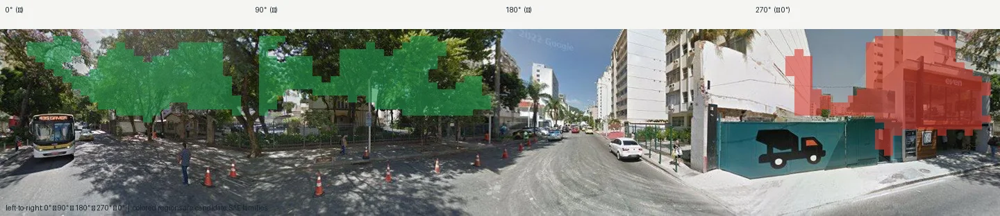
panoid: hxmQU3Akf6Tvve6K_zNwdA

panoid: UKTitL1JBmBS54iCDykPBg
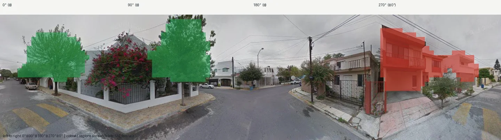
panoid: s9HM5VFOPvVAwWTwFVGbug
关系 02 · 建筑及附属部件 + 步行空间及附属部件 + 乔木及其部件 (building + pedestrian + tree)
全景关系：近邻 / 后者更低；相邻 / 高度相近；相邻 / 后者更高。训练集 42 个全景 / 18 城；开发集 19 个全景 / 14 城。共现置换 q=0.010，布局置换 q=0.010。
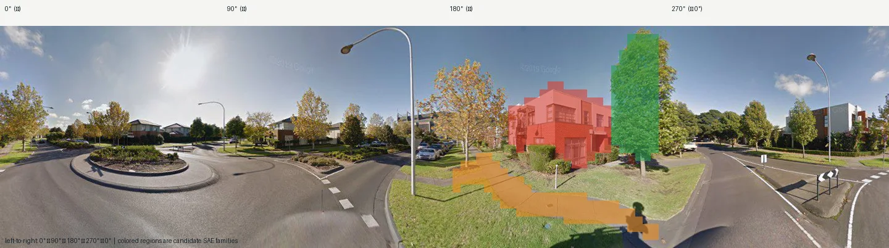
panoid: 3pooU8FAzFKPqjzatMLQiA
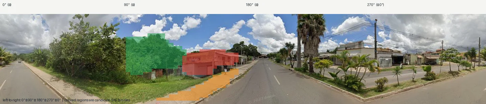
panoid: ORuT0l95yu62RQyfnUyq5A
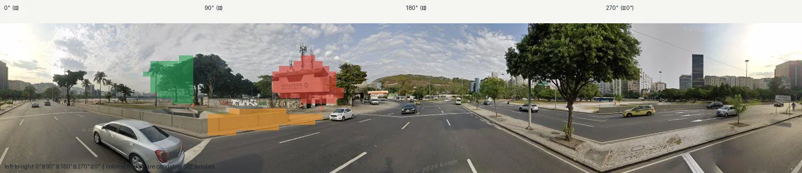
panoid: meDWz8ecAAMkdXwxJGW_5w
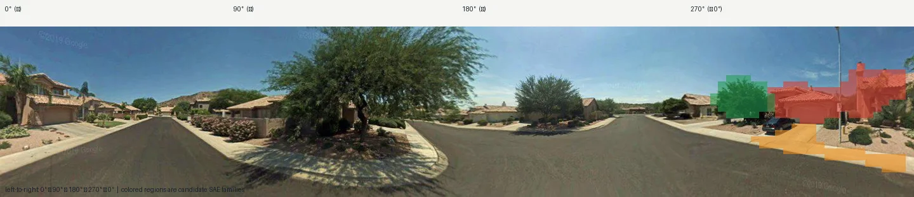
panoid: 3DKmzAcdLrmJ2CsfL7TWzA
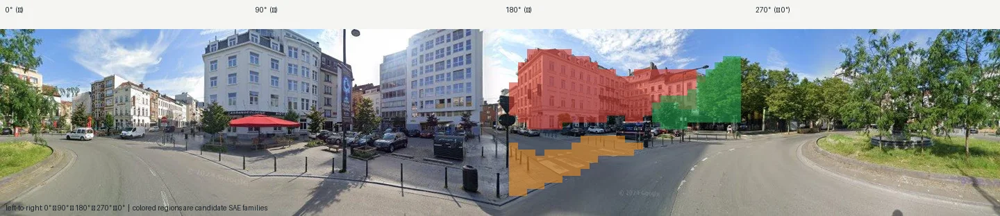
panoid: aY2W1ZdOR-_timaQ1Wdpug
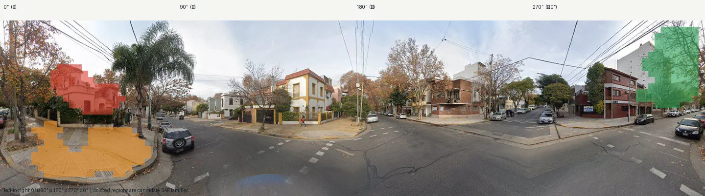
panoid: UoYtZxOoj91i2JZRMWgkAw
关系 03 · 围合与防护设施 + 道路及车行路面 + 乔木及其部件 (barrier + road + tree)
全景关系：较宽间隔 / 高度相近；近邻 / 后者更高；较宽间隔 / 后者更高。训练集 146 个全景 / 28 城；开发集 52 个全景 / 25 城。共现置换 q=0.010，布局置换 q=0.010。
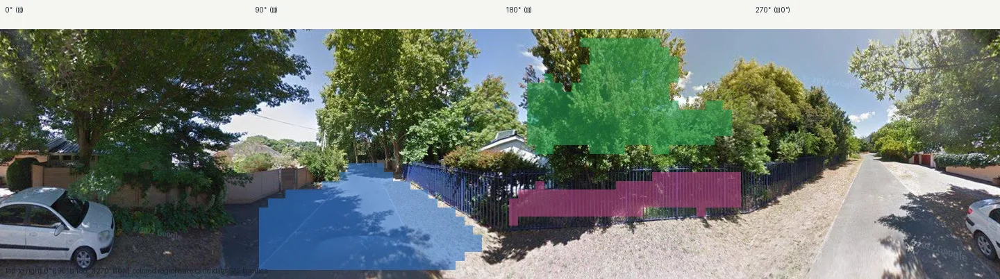
panoid: 6aABw68vbxQK_b88plqJ5g
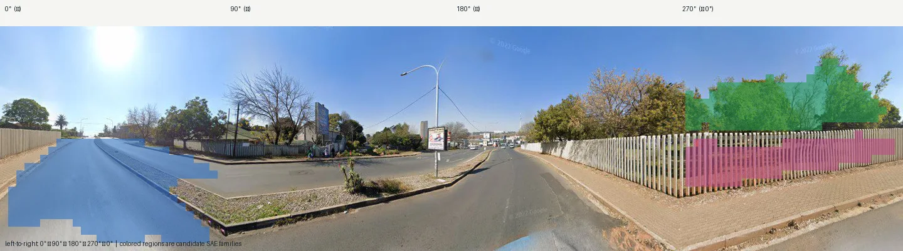
panoid: 1_hgzoCJZNVzqvYcr1I82Q

panoid: QSN2bnEzu45p0D4DImX2FA
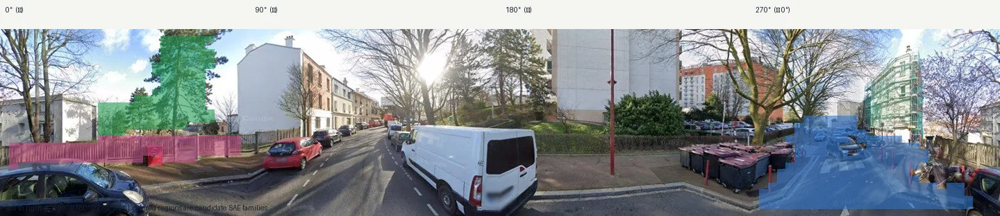
panoid: eh8aF4l3KUkNi5R1TN5ugg

panoid: BLPgj8oraj8KkspGP_SX6Q
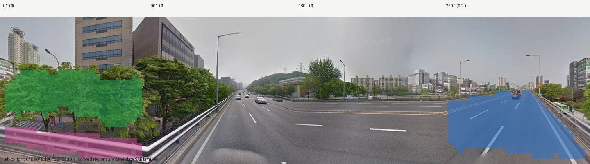
panoid: _k5xsxK2LNN8PZQLTTzRHA
关系 04 · 建筑及附属部件 + 道路及车行路面 + 市政杆线设施 (building + road + utility)
全景关系：较宽间隔 / 后者更低；较宽间隔 / 高度相近；近邻 / 后者更高。训练集 163 个全景 / 26 城；开发集 61 个全景 / 23 城。共现置换 q=0.010，布局置换 q=0.010。
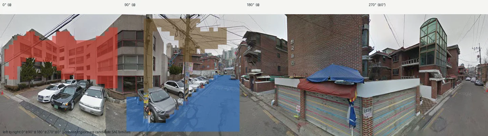
panoid: GzH21Q_UiGghu20hvChVKg
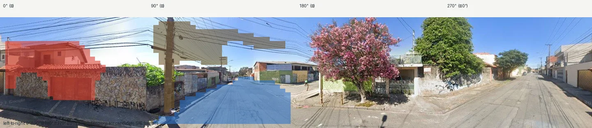
panoid: PDk699Kw2eK6yAaxXowq_A
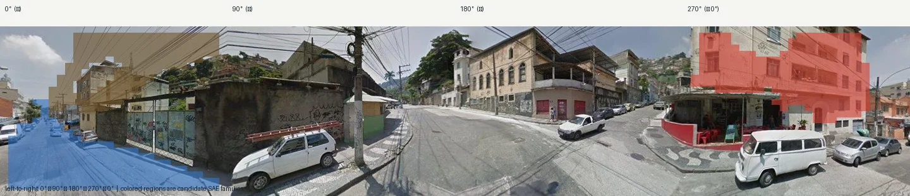
panoid: p5za8RY2C-FZObOLmZHa4g
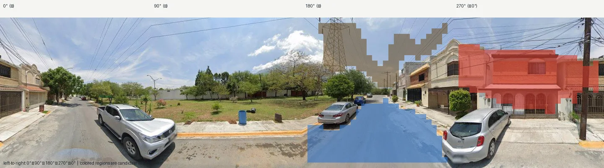
panoid: a7B15S3Wlqr65_uratqkQg
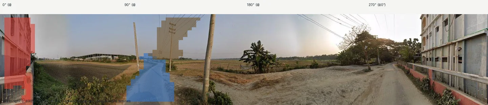
panoid: 70hK1w8CqZOwIX95EsUUjQ
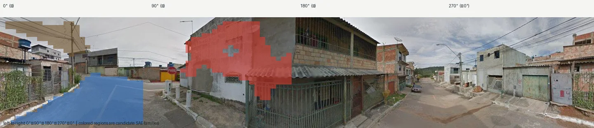
panoid: -zclim24TlSJG80y_DqO-Q
关系 05 · 草灌及低矮植被 + 步行空间及附属部件 + 乔木及其部件 (low_vegetation + pedestrian + tree)
全景关系：相对方向 / 高度相近；近邻 / 后者更高；相对方向 / 后者更高。训练集 42 个全景 / 19 城；开发集 18 个全景 / 13 城。共现置换 q=0.010，布局置换 q=0.010。
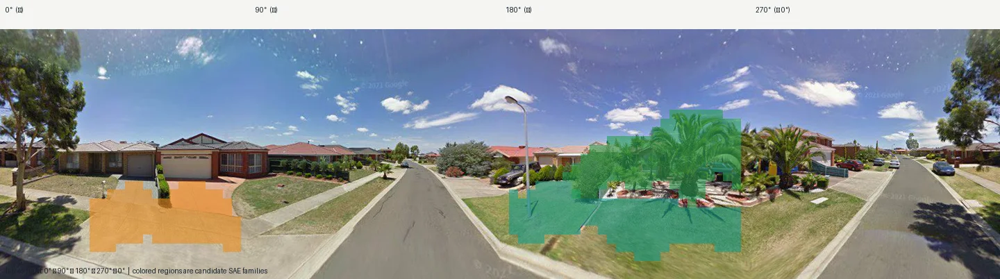
panoid: jy225YuY7U_s98fyuMQHhg
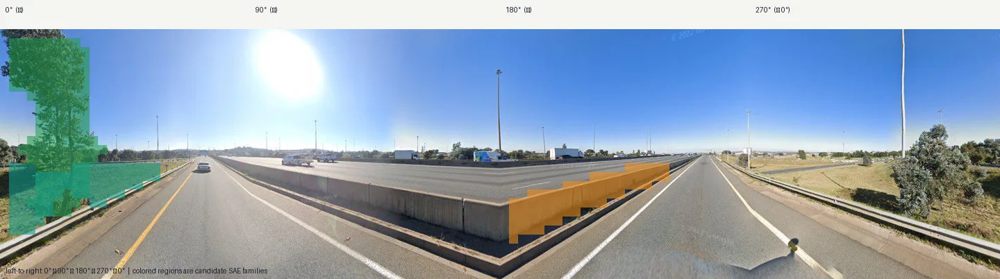
panoid: idu5nz2xqoaa_rT8Jd3YLA
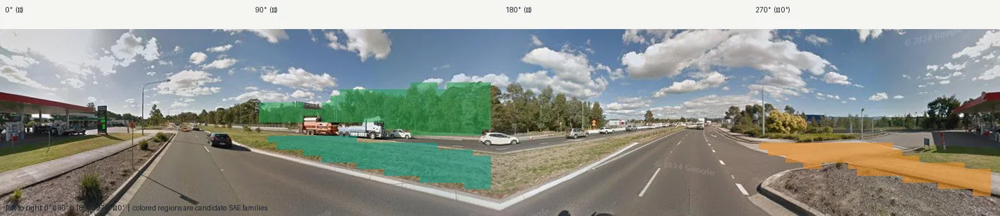
panoid: 2zEGVo7z_NLA8-_zi2I9OQ
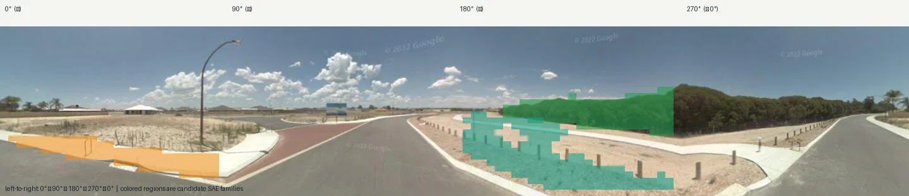
panoid: lRMKKqfOfKDHM8J-44Skww
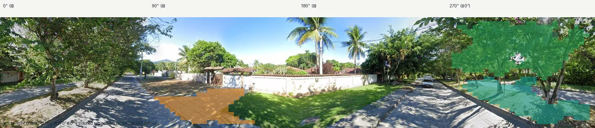
panoid: Mt7snn7fZFv7MJ9PJv5eSA
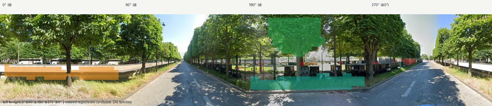
panoid: 7sJnexEPFQ1Auk1siTK3wA
关系 06 · 建筑及附属部件 + 乔木及其部件 + 乔木及其部件 (building + tree + tree)
全景关系：相对方向 / 高度相近；很宽间隔 / 高度相近；相邻 / 高度相近。训练集 158 个全景 / 29 城；开发集 39 个全景 / 25 城。共现置换 q=0.010，布局置换 q=0.010。
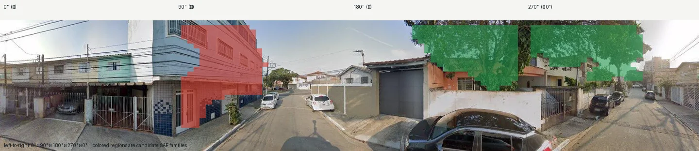
panoid: 5Qz1MXzL0GLxvELpJI-5dw
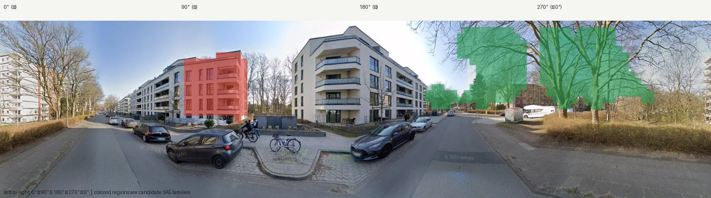
panoid: mc099r3XZwR8Ufu9C1d38Q
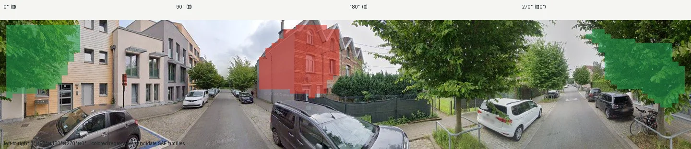
panoid: wX6vL4gKz3stQKeE724XkA
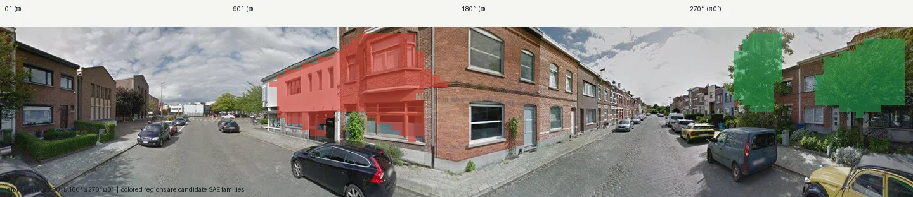
panoid: ZUs2a1WGiTS6JSRFdnrHvQ
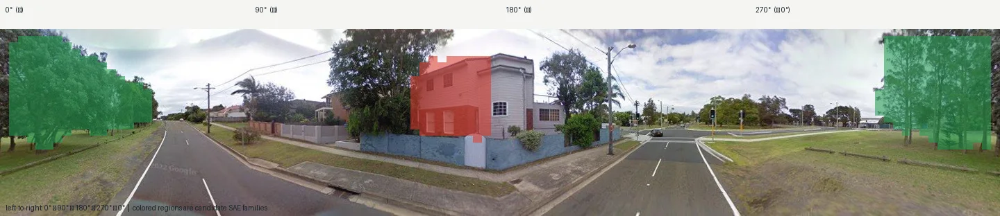
panoid: PogEfIT3wGi7i5a1rJqtQg
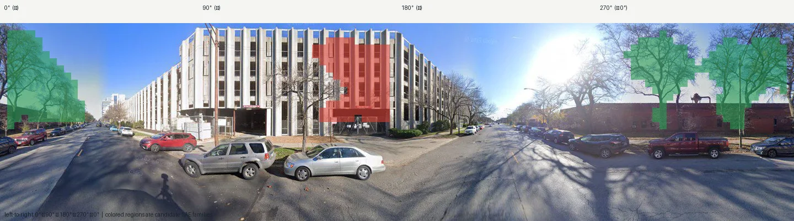
panoid: Wum2PF5ph2gy2q8BvCLamQ
关系 07 · 建筑及附属部件 + 乔木及其部件 + 乔木及其部件 (building + tree + tree)
全景关系：相邻 / 高度相近；较宽间隔 / 高度相近；相邻 / 高度相近。训练集 184 个全景 / 28 城；开发集 57 个全景 / 24 城。共现置换 q=0.010，布局置换 q=0.010。
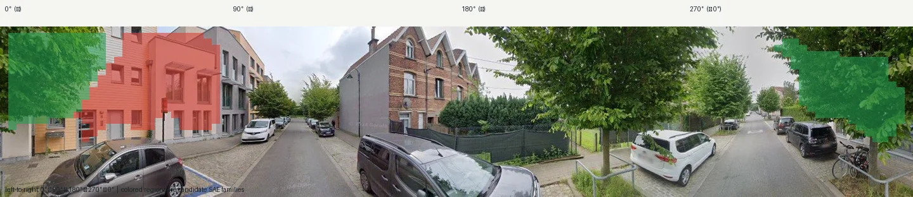
panoid: wX6vL4gKz3stQKeE724XkA
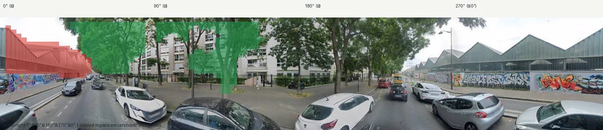
panoid: GmH8r-cXnHlF9vnEZA0BvA
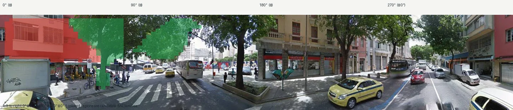
panoid: GHuDQnOpf1DFbYB3BF6bqg
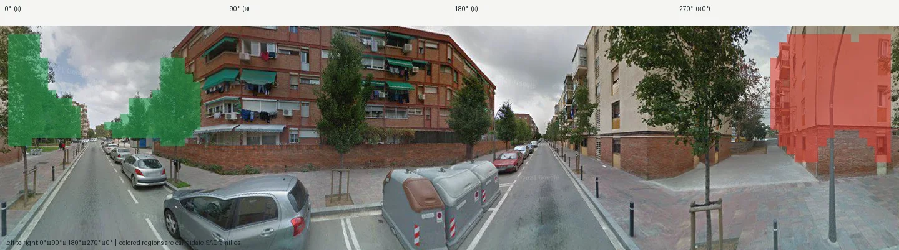
panoid: zVpMMgNf3mug7mygqncyOg
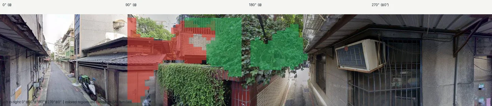
panoid: HxS70FxQ9vQMP2A68XEWJg
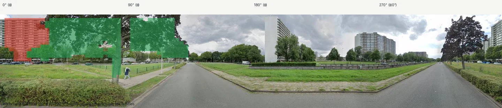
panoid: wSXGrwbNdR8rpU_jk9EhDA
关系 08 · 建筑及附属部件 + 乔木及其部件 + 乔木及其部件 (building + tree + tree)
全景关系：相邻 / 高度相近；相对方向 / 高度相近；很宽间隔 / 高度相近。训练集 134 个全景 / 28 城；开发集 38 个全景 / 24 城。共现置换 q=0.010，布局置换 q=0.010。
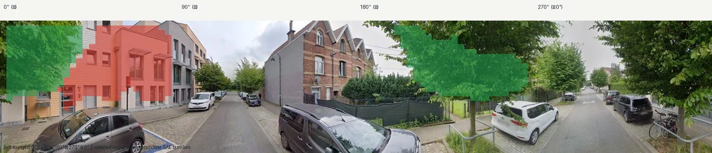
panoid: wX6vL4gKz3stQKeE724XkA
panoid: dvHuB28gW7iGd4W965iAtA
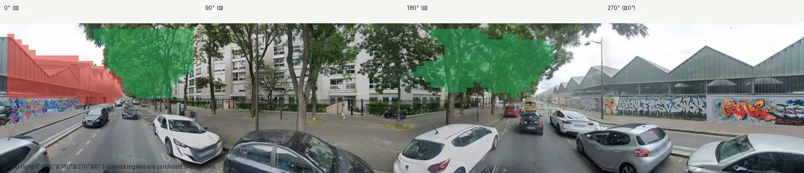
panoid: GmH8r-cXnHlF9vnEZA0BvA
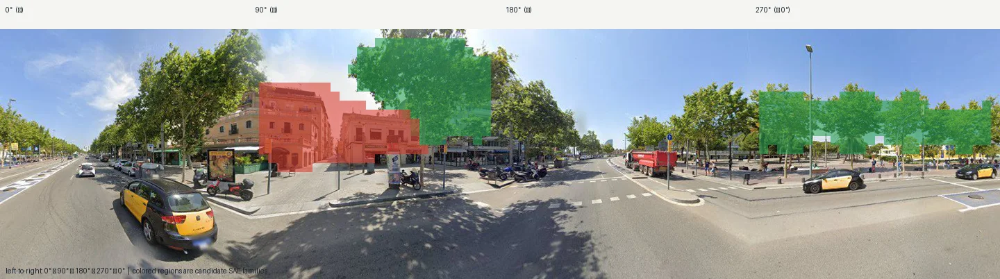
panoid: ugTMT4jgxrW-cG_kils-BQ
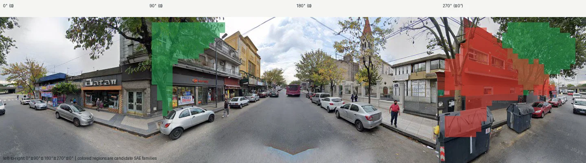
panoid: mo4gf9eDIipWPsq7dZupog
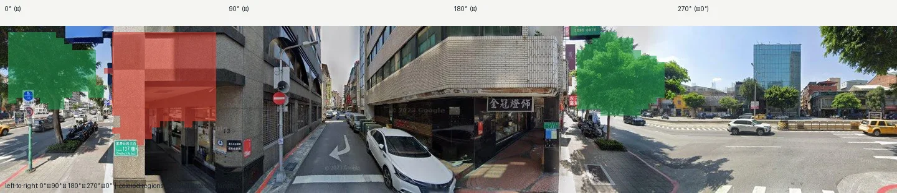
panoid: kdOusnlmMsEi0ZO85WnqPw
关系 09 · 建筑及附属部件 + 乔木及其部件 + 乔木及其部件 (building + tree + tree)
全景关系：很宽间隔 / 高度相近；较宽间隔 / 高度相近；相邻 / 高度相近。训练集 139 个全景 / 28 城；开发集 49 个全景 / 23 城。共现置换 q=0.010，布局置换 q=0.010。
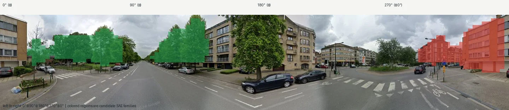
panoid: y0X99-9VlL5csqCN-cBsjw
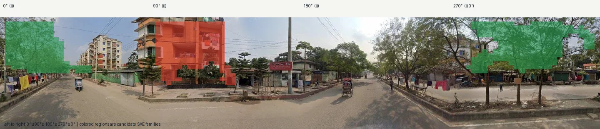
panoid: zG-22KP0G4QRpmzuDvtKoA
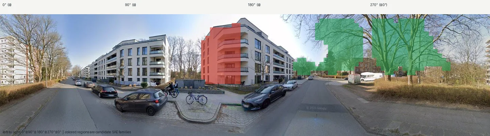
panoid: mc099r3XZwR8Ufu9C1d38Q
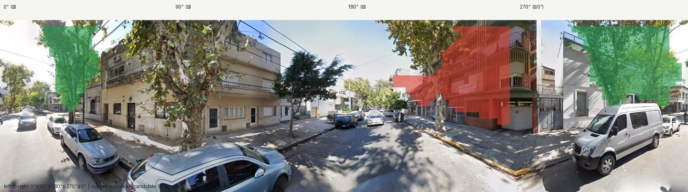
panoid: YxcrjEIwOJ20jJKSfaw8yw
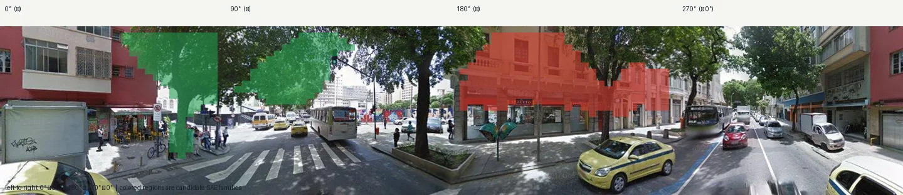
panoid: GHuDQnOpf1DFbYB3BF6bqg
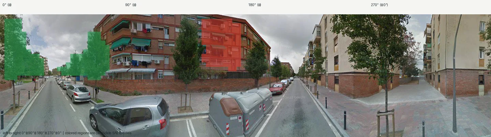
panoid: zVpMMgNf3mug7mygqncyOg
关系 10 · 建筑及附属部件 + 乔木及其部件 + 乔木及其部件 (building + tree + tree)
全景关系：相对方向 / 高度相近；较宽间隔 / 高度相近；相邻 / 高度相近。训练集 134 个全景 / 28 城；开发集 39 个全景 / 22 城。共现置换 q=0.010，布局置换 q=0.010。
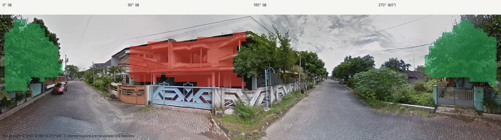
panoid: nUsIzPs5uRMXI_3pNUhhdw
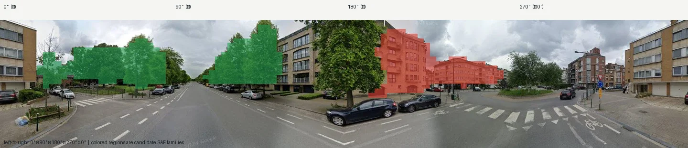
panoid: y0X99-9VlL5csqCN-cBsjw
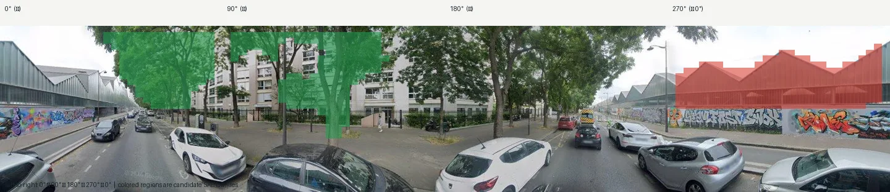
panoid: GmH8r-cXnHlF9vnEZA0BvA
panoid: mkH0PTNuodaz4zZ_WtCXlg
panoid: 5Qz1MXzL0GLxvELpJI-5dw
panoid: Xigk7kfyNsk-WKda5WTDFg
关系 11 · 建筑及附属部件 + 乔木及其部件 + 乔木及其部件 (building + tree + tree)
全景关系：近邻 / 高度相近；较宽间隔 / 高度相近；较宽间隔 / 高度相近。训练集 129 个全景 / 28 城；开发集 40 个全景 / 19 城。共现置换 q=0.010，布局置换 q=0.010。
关系 12 · 建筑及附属部件 + 乔木及其部件 + 乔木及其部件 (building + tree + tree)
全景关系：相邻 / 高度相近；很宽间隔 / 高度相近；较宽间隔 / 高度相近。训练集 123 个全景 / 26 城；开发集 34 个全景 / 19 城。共现置换 q=0.010，布局置换 q=0.010。
关系 13 · 建筑及附属部件 + 乔木及其部件 + 乔木及其部件 (building + tree + tree)
全景关系：很宽间隔 / 高度相近；较宽间隔 / 高度相近；很宽间隔 / 高度相近。训练集 103 个全景 / 26 城；开发集 33 个全景 / 19 城。共现置换 q=0.010，布局置换 q=0.010。
关系 14 · 建筑及附属部件 + 乔木及其部件 + 乔木及其部件 (building + tree + tree)
全景关系：相邻 / 高度相近；很宽间隔 / 高度相近；相对方向 / 高度相近。训练集 91 个全景 / 25 城；开发集 42 个全景 / 18 城。共现置换 q=0.010，布局置换 q=0.010。
关系 15 · 建筑及附属部件 + 乔木及其部件 + 乔木及其部件 (building + tree + tree)
全景关系：相邻 / 高度相近；较宽间隔 / 高度相近；很宽间隔 / 高度相近。训练集 115 个全景 / 29 城；开发集 37 个全景 / 18 城。共现置换 q=0.010，布局置换 q=0.010。
关系 16 · 建筑及附属部件 + 乔木及其部件 + 乔木及其部件 (building + tree + tree)
全景关系：较宽间隔 / 高度相近；较宽间隔 / 高度相近；相对方向 / 高度相近。训练集 97 个全景 / 27 城；开发集 35 个全景 / 18 城。共现置换 q=0.010，布局置换 q=0.010。
用于解释的景观要素基础
窗户、门和建筑墙面归入建筑，树冠和树干归入乔木，车窗和车轮归入车辆。父类只作为关系检索的辅助，仍需人工核查。要素标签及其激活图见 标签与激活页。